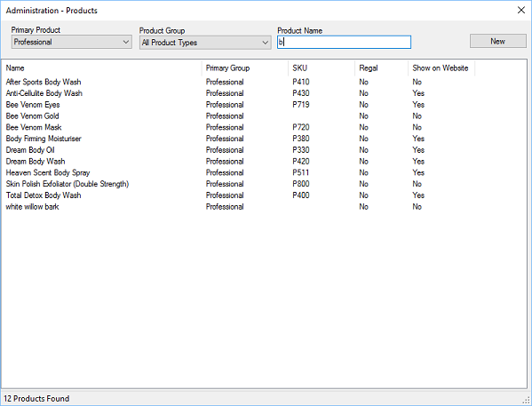

You can view and edit all products within the POS.

When viewing products you can filter on primary product type, product group or enter the
name, or part of the name to filter down to specific products.
Clicking the New button will create a new product.